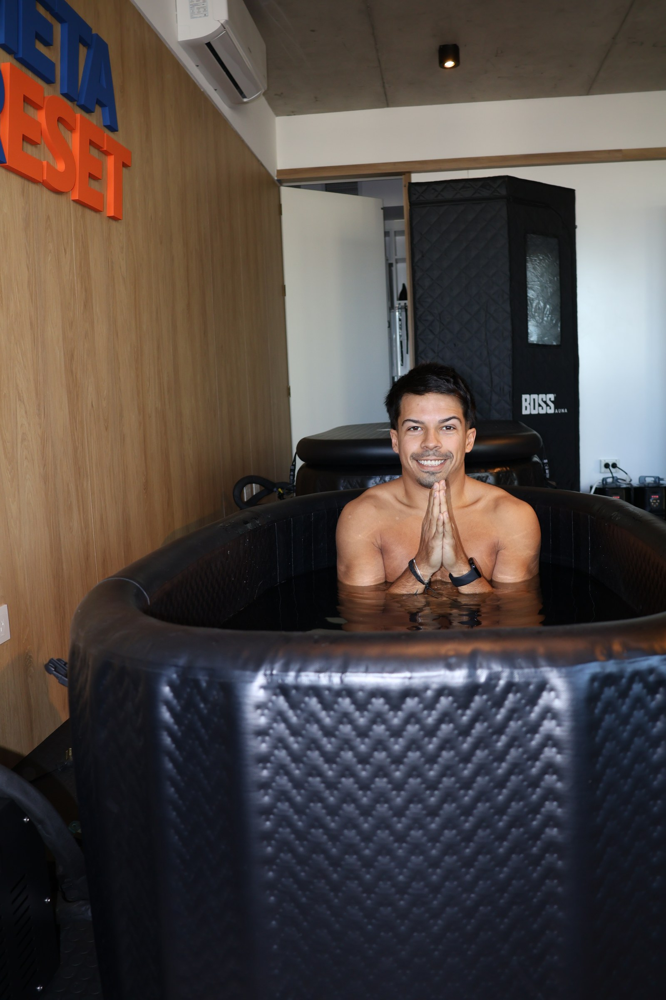

La historia
Meta Reset nació de una necesidad real. La nuestra primero, la tuya después.
Meta Reset
Meta Reset nació de la convicción de que la recuperación es parte del rendimiento, no una opción ni un lujo. Vimos cómo los atletas de élite incorporaban técnicas de frío, calor y compresión en su rutina diaria, y quisimos hacer eso mismo accesible para cualquier persona que exige lo mejor de su cuerpo.
Creamos un espacio donde podés entrar, desconectarte del mundo por 50 minutos, y salir sintiéndote distinto. Más liviano. Más enfocado. Más vos.
Lo que usaban los mejores del mundo ahora está en Olivos, a disposición de todos.

El fundador
"Viví en carne propia lo que significa no recuperarse bien. La fatiga acumulada, la mente saturada, el cuerpo que pide para. Meta Reset es la respuesta que hubiera querido tener entonces."
Felipe creó Meta Reset después de años vinculado al mundo del deporte y la performance. Su obsesión por la recuperación lo llevó a estudiar las técnicas usadas por atletas de nivel mundial y a traerlas a un formato accesible, sin vueltas y con resultados reales.
¿Querés ser parte?
Una vez por semana para sostener tu recuperación.
Dos veces, para llevarla a otro nivel.